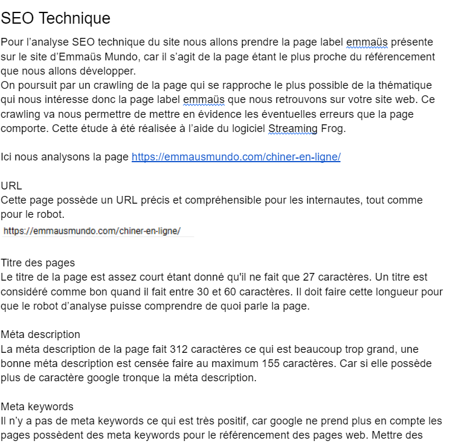

Projet Emmaüs Mundo
Lors de ma seconde année d’études, j’ai eu le plaisir de travailler pour un projet étudiant sur une association caritative Emmaüs. Plus précisément il s’agissait de la branche Emmaüs Mundo. Pour ce projet les missions étaient de produire des contenus multimédias pour une association ou organisation à but non-lucratif, sur une branche spécifique de leur activité. J’ai travaillé sur la partie friperie et textile. Pour remplir au mieux cette demande avec mon groupe nous avons décidé de qualifier ce gros travail en trois missions distinctes :
- Nous allons faire l’analyse de l’existant et l’audit du référencement du site de l’association.
- Nous proposerons des recommandations stratégiques, éditoriales et graphiques dans le but d’améliorer sa communication et sa présence en ligne.
- Nous réaliserons les contenus à partir des recommandations que nous aurons établies, en tenant compte des consignes fournies.
Pour ma part lors de ce projet j’ai essentiellement travaillé sur la partie communication et référencement naturel (SEO).
Communication
Pour la réalisation de cette partie j’ai pour commencer réaliser une analyse de l’existant pour savoir ou en était tous les comptes sociaux de l’association mais aussi pour savoir ce qui était fait actuellement en termes de communication. Une fois cette étape terminée j’ai fait une synthèse de tout les points négatifs et positifs trouvé durant cette phase d’analyse. Par suite de cela j’ai proposé plusieurs recommandations et plusieurs méthodes pour améliorer leur communication que ce soit en termes d’audience ou en termes de qualité de publication. Dans cette recommandation j’ai même proposé des idées de publication qui pourrait intéresser leur audience.


Référencement
Pour cette partie, j’ai aussi commencé par une analyse de l’existant de leur référencement sur le web afin de savoir sur quels mots clés ils étaient implémentés et pourquoi. Mais aussi pour voir si les mots clés les plus importants pour eux, mets leurs site web et réseaux sociaux en avant. Pour donner suite a cette analyse j’ai effectué deux recommandations, la première sur le référencement. Donc je leur proposé des solutions pour améliorer leur référencement naturel étant donné qu’il ne voulait pas faire de référencement payant. La seconde recommandation est sur la sémantique je leur est proposé tout une nouvelle gamme de mots-clés sur lesquels il pourrait s’implémenter afin de ce mettre en avant sur des longues et petites traines. Je leur est écrit un exemple d’article qu’il pourrait utiliser pour leur mise en avant avec ces deux recommandations.